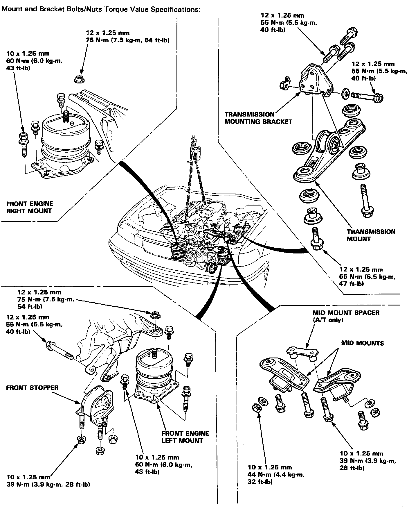

Operation CHARM
: Car repair manuals for everyone.
Home
>>
Acura
>>
1993
>>
Vigor L5-2451cc 2.5L SOHC G25A4 FI
>>
Repair and Diagnosis
>>
Engine, Cooling and Exhaust
>>
Engine
>>
Drive Belts, Mounts, Brackets and Accessories
>>
Engine Mount
>>
Diagrams
Engine Mount: Diagrams

Left and Right Front Motor Mounts.